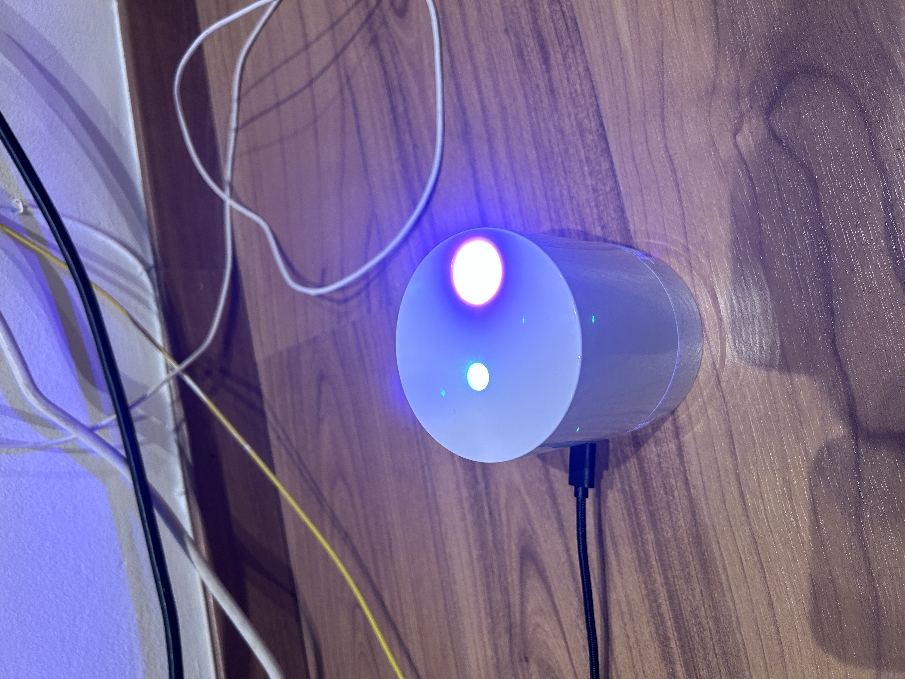

Mysterious ticking noise
Galaxy Projector from Amazon
I have this projector that I sometimes turn on to chill at night: it projects these northern lights-like type of colors in the ceiling, which are nice and relaxing.
The nice and relaxing part was interrupted, however, by this mysterious ticking noise.

Mysterious ticking noise
I went ahead, grabbed my favorite, cutest screwdriver and started taking a look at what could be producing that annoying ticking.


Nothing too complex. Here we see what is the controller, the LED light source with it’s palm-tree like heat diffuser, more LEDs that produce the different colors, the motor and a disc with a texture that simulates the wavy-texture projected into the sky.


Obviously, the culprit is the motor. That was proven when the rotatory speed for the textured disk was modified. The faster it spun, the more ticking sounds. When it didn’t spin, there weren’t ticking sounds.
In the name of science, some more pictures of the naked device while on.

 One thing I noticed while I was undressing my projector, is that the mysterious ticking noise wasn’t there anymore. While there was a very, veeery faint ticking noise (you had to put your ear against the motor), the audible tick-tick-tick-tick wasn’t there.
One thing I noticed while I was undressing my projector, is that the mysterious ticking noise wasn’t there anymore. While there was a very, veeery faint ticking noise (you had to put your ear against the motor), the audible tick-tick-tick-tick wasn’t there.
So, what’s the problem now? Actually, nothing.
I left the device running for a few hours; case in, case out, cables this way, cables that way, disc on, disc off… yet nothing. The problem had decided to solve itself the moment that I decided to open it.

That was a little bit annoying, won’t lie. I was excited to actually take it apart and solve it. And I also don’t know if, after some time, the mysterious ticking noise will reappear.
If it comes back, I will create a part two.
Hypotheses
Mechanical problem
Most probable one. The motor is hitting a hard part of the internal case while doing the rotation. After opening it, separating its components, loosening and hardening the pressure on the screws and building it back up, we might have solved this structural problem.
Cheap gear reducers
Maybe? I don’t know. Before taking this thing apart I had no idea gear reducers were a thing. They would be used to transmit the mechanical power of the motor to the driven load, and they transform the high speed of the motor to the low speed needed for the textured disk.
I think this option makes a lot of sense as well.
While disassembling the projector, I might have corrected the position or set in place part of a misplaced little piece.
Conclusion
No conclusion. I don’t know why it was happening, so I took a look and it stopped happening. I don’t know why it stopped happening. Great! Problem fixed.
See you!